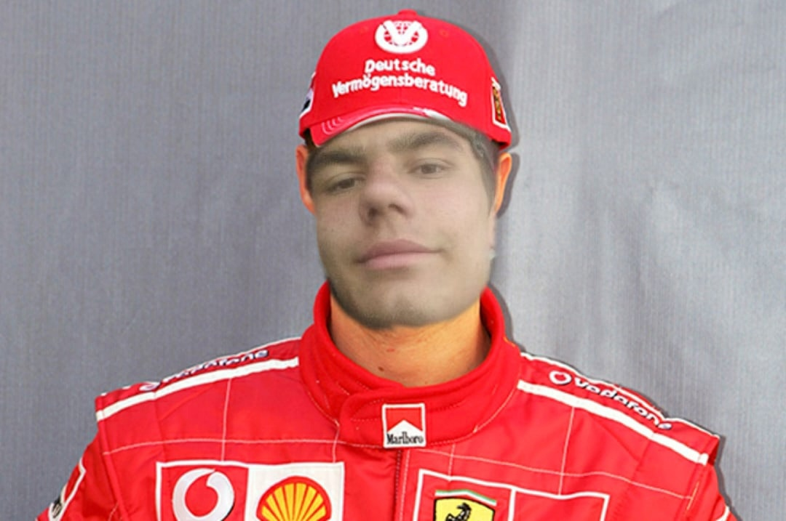
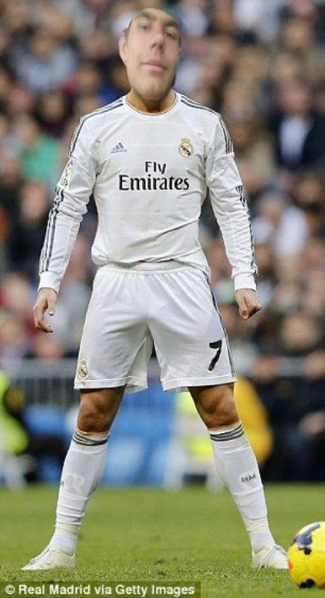
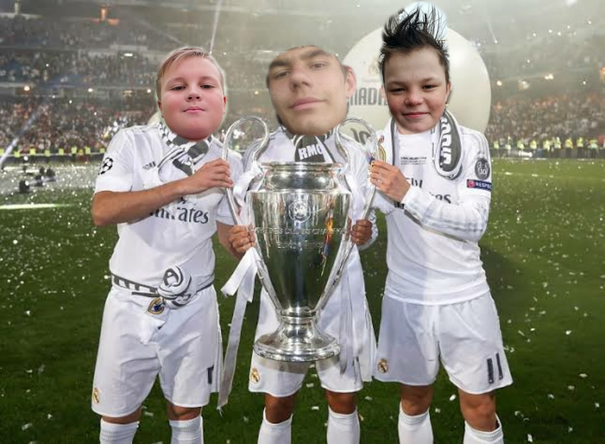

гриша лютый jdm pro
гриша самый лютый гонщик на планете
не победимый чемпион мира в jdm. И в драге он также хорош
машина гриши это лада нива x1000 sport pro
мотор там v32
а мощность двигателя 2387 л.с
гришу ещё никто не выйграл и не победит
потому что с ним все бояться гонять
даже легендарый гонщик егор и кирилл гориллыч
соперники гриши
- великий кирилл гориллыч
- егор лютый m10xxx
- ну и конечно же артём крузак 600
нет никого сильнее меня потому что как говорила бабушка артёма мой пра-пра дед был японцем
гриша лютый jdm pro

гриша лютый в футболе
гриша это легенда футбола
лютый гриша обладатель 37 золотых мечей и 40 золотый бутс
гриша за всю истоию забил 1537 голов
гришина команда это реал мадрит

история клубов гриши
- fc цб
- fc уфа
- fc ЦСКА
- реал мадрит
- fc цб
- гриша был самым лютым во дворе и потом он пошёл в профисиональный футбол
- fc уфа
- гриша пошёл на футбол в 2011 где был самым лютым в этом клубе
- fc ЦСКА
- гришу заметил этот клуб в 2013 году и потом он входил в сборную россии где он играл 5 лет
- fc реал мадрит
- в 2018 году его выкупил футбольный клуб реал мадрит. Потом туда перешли два игрока лютый миша шахтёр и артём крузак где они создали легендарное трио
легендарное трио
